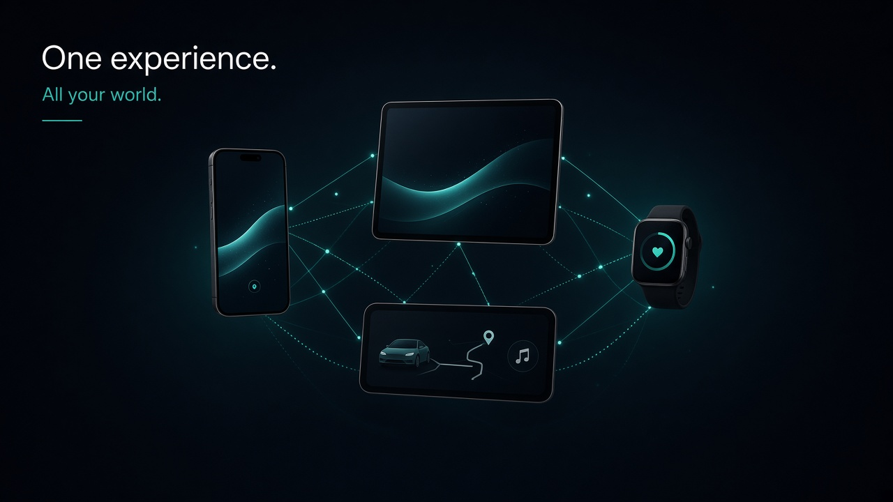
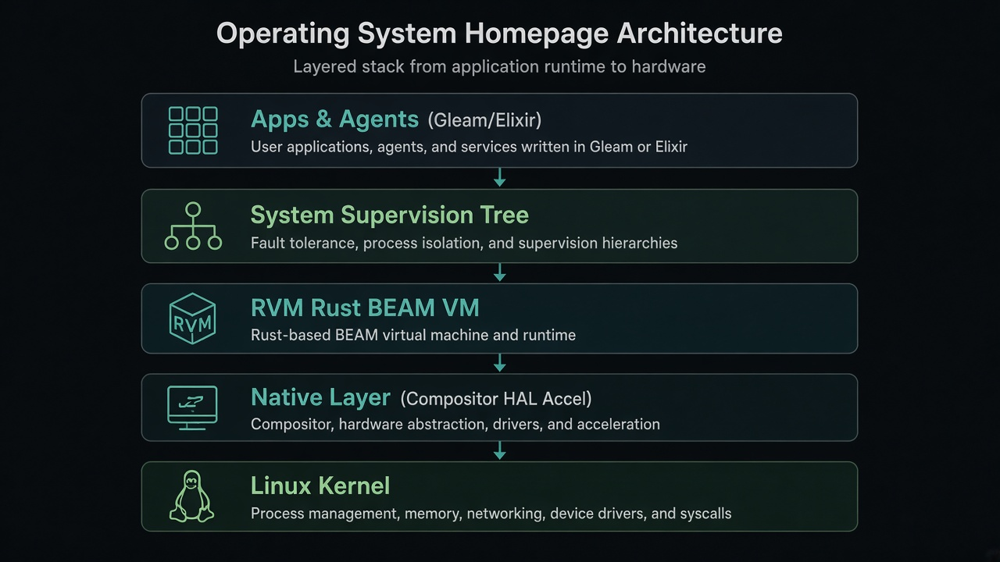
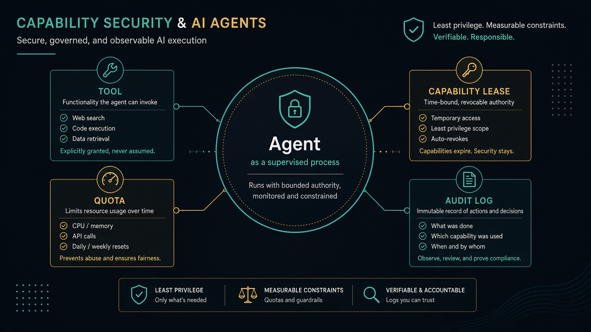
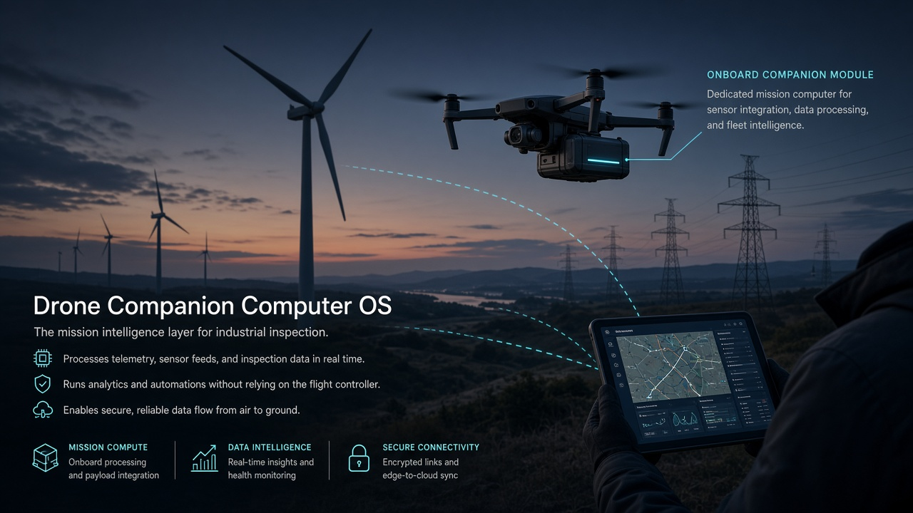
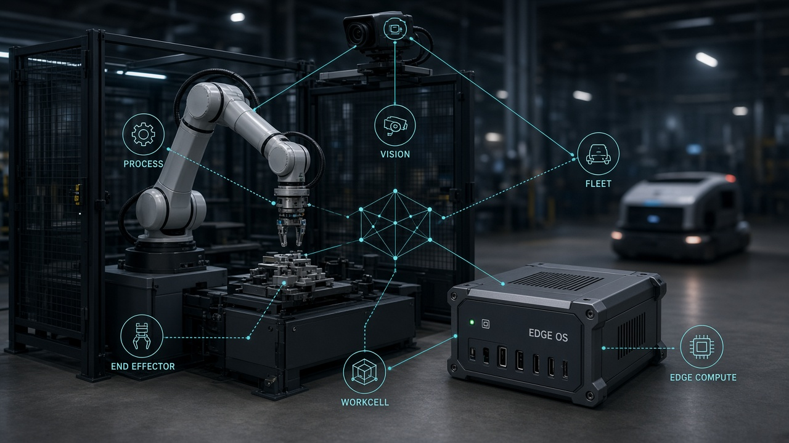

-
01
-
02
-
03
-
04




| Android | RELang OS | |
|---|---|---|
| ART | ||
| Zygote | Seed | |
| IPC | Binder | |
| system_server | ||
| Java / Kotlin | Gleam · Elixir · Erlang | |
| NDK | Wasm | |
| Manifest + uid | ||
| UI | View / Compose |